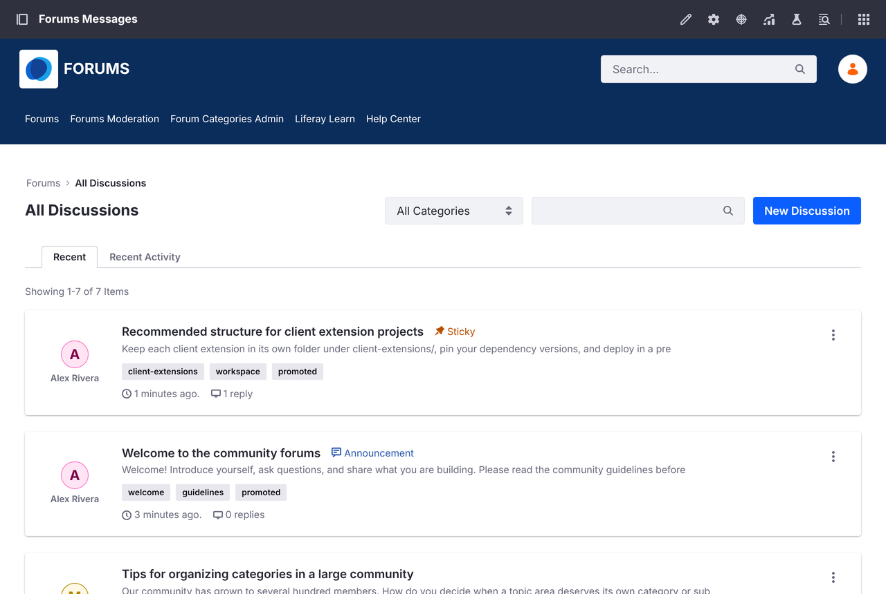
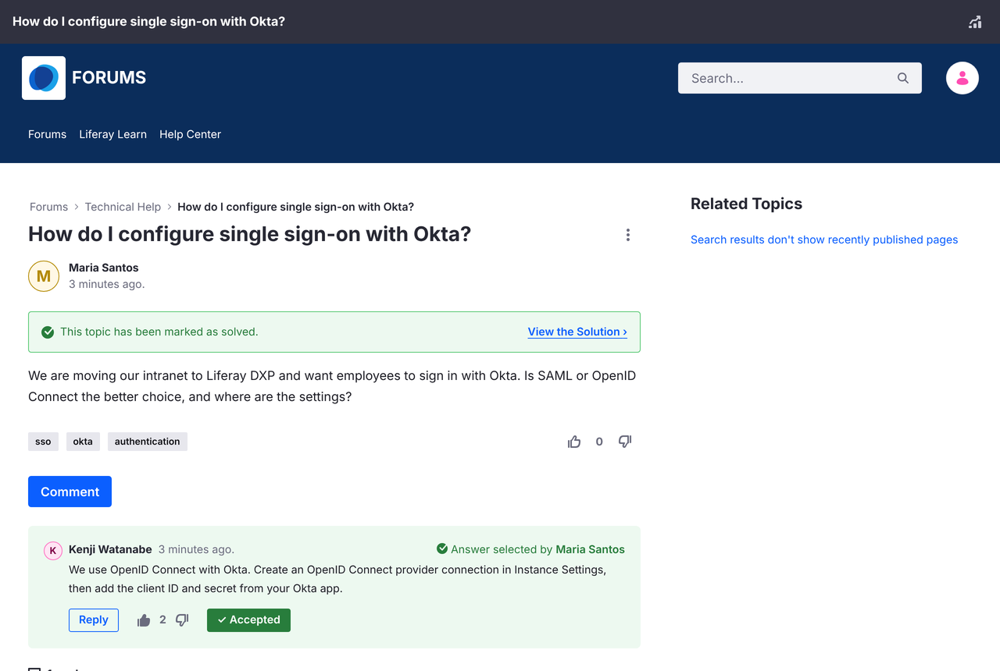
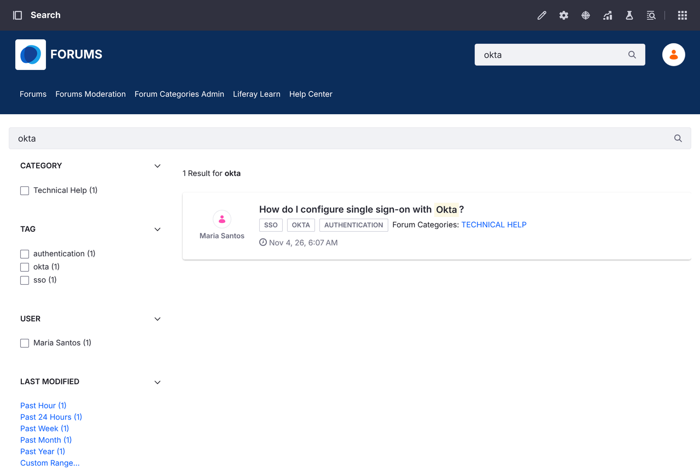
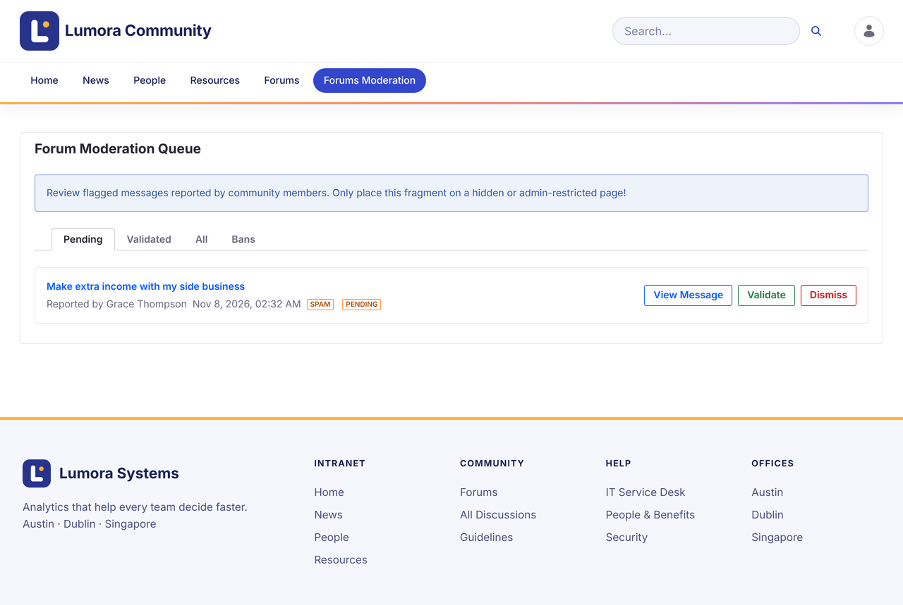

Marketplace 应用
Liferay Forums
面向 Liferay DXP 的现代讨论论坛
面向 Liferay DXP 的讨论论坛。成员可以提问、分享答案并关注话题，版主负责维护社区秩序。
功能
- 讨论与提问. 可将话题发布为开放讨论，或发布为可标记为已解决的问题。
- 提及与订阅. 使用 @ 提及成员，并接收所关注话题的网页和邮件通知。
- 内容审核. 成员可以举报内容，版主可以审核举报、锁定或删除话题，并按站点封禁作者。
- 搜索. 按类别、标签、作者和日期等维度筛选查找话题。
- 类别. 将话题按类别和一级子类别进行组织。
- 投票. 可以对话题和回复点赞或点踩。
- 多个站点. 运行多个独立论坛，每个论坛都有自己的类别、话题和封禁设置。
- 13 种语言. 界面标签提供 13 种语言，包括日语和中文。
截图



